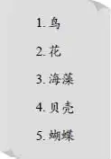

Summer Plan
“咱们得去岛上探探险了！”挖完蛤蜊的第二天早上，亨利说，“说不定哪天就下雨了，而且暑假很快也会过去。”
“今天上午就可以去，”杰西来到马厩门口，“煮蛤蜊用不了多长时间，咱们今天中午就可以吃了它——当然，还要配上面包、黄油和牛奶。要是11点能回来，咱们的时间便绰绰有余。”
“那就这么定了，”亨利说，“带上大水壶吧，说不定可以捡一些宝贝带回来。班尼去哪儿了？”
“那不是么？”杰西指了指远处。
班尼正从码头上回来，手上提着一篮日用品。
“快来，班尼，我们要去探险了。”亨利一边说，一边提起了那个大水壶。
“不是要煮我的蛤蜊吗？”班尼问。
“当然要煮。等咱们回来后，有的是时间煮你的蛤蜊，班尼。”
于是，大家一起来到了沙滩上。
“看，这贝壳可真有趣，”杰西说着从脚边挖出了一块贝壳，“像小船一样。咱们把它留下来吧。”她将那块贝壳扔进了壶里。
“这儿还有一块，也好漂亮，”维莉说，“咱们把找到的贝壳全都留下来吧。”
“杰西，快看那些紫色的花，就在沙滩上，它们真好看！”班尼叫道。
“咱们把找到的花也全都留下来吧。”杰西说，“放到壶里，班尼。”
这时，亨利突然从沙滩上一跃而起，大家都吃惊地看着他。
连望望也跟着亨利跳了起来，杰西诧异地问：“你怎么啦？”
“我想到了一个超棒的点子！”亨利叫道。
“那就赶紧告诉我们吧！”维莉说。大家都在沙滩上坐了下来。
亨利问道：“你们都知道博物馆是什么吧？”
“我不知道。”班尼老实地回答。
“你当然知道，班尼，”亨利说，“你肯定看过博物馆的照片，就是那些里面保存着各种各样的鸟儿、动物和花草的地方。”
“还有贝壳。”维莉补充道。
“没错，”亨利看着妹妹，“你已经知道我的想法了，对吗？”
“是的，”维莉说，“而且我还觉得这个点子真是太完美了。”
“真的吗？”亨利说，“我本来还不太确定呢。”
“到底是怎样的妙点子？”杰西赶忙问道。
“是这样的，”亨利说，“在这座小岛上，咱们肯定可以找到很多值得收藏的新奇玩意儿：就像刚才的贝壳和花……接下来肯定还会有更多的收获，比如蝴蝶、鸟和海藻……”
“我们可以把马厩上的阁楼收拾出来。”杰西说。
“这样咱们也有一个博物馆啦。”班尼迅速回应道。
“这件事情多有意义呀！我真想马上就开始做！”杰西说，“想想看，有了博物馆，就算是下雨天，咱们也有事可干了。维莉负责给每样东西做个小标签，你负责在屋子里搭好桌子，而我可以把收集来的花儿都压在报纸里晾干，把贝壳都装进盒子里。”
“咱们不会去抓真的小鸟吧？”维莉显得忧心忡忡。
“当然不会！”亨利说，“我们用厚纸片剪出小鸟的形状，再涂上颜色——把咱们看到的所有小鸟都做出模型来。”
“然后咱们还可以出去砍一些树枝，把‘小鸟’放在树枝上，”杰西补充道，“我在博物馆里见过。”
“没错！咱们还可以找一些废弃的鸟窝，放到树枝上面。这个夏天，咱们会过得非常有趣的。”亨利满心期待地说。
维莉开始用小本子记了起来：

“博物馆刚刚兴建，有这些就足够了，”亨利站了起来，“接下来我们要睁大眼睛去寻找宝贝了。”
就这样，探索小队再次出发了。他们仔细地观察着树上的小鸟，摘下小花，连同贝壳一起扔进壶里。
“可咱们不知道这些贝壳的名字，我怎么写标签呢？”维莉将一块细长的蛤蜊壳扔进了壶中，但大家都不知道这种蛤蜊到底属于什么类别。
“或许咱们可以去图书馆借一本关于贝类的书，”亨利说，“爷爷说过，只要咱们愿意，就可以跟着丹尼尔船长一起去岸上。不过，我倒是一分钟也舍不得离开这座小岛！”
“总会有办法的。”杰西说。
果不其然，机会来了。探索小队刚回到马厩，便看到大乔上了摩托艇。
“喂——请等一下！”杰西一边喊，一边朝着码头跑了过去。
“别着急，”大乔喊道，“我等着你们。”
不过，几个孩子依旧飞奔着。
“你这是要去商店吗，大乔？”杰西问。
“是的，”大乔回答道，“你们想要什么我都可以帮你们带回来，而且只需要一个小时的时间。”
“那你刚好要路过图书馆！”杰西说，“可不可以帮我们带一些书回来？”
“没问题，只要在图书馆登记一下，就能拿回你们要借的书。”他说道。
大乔掏出纸和笔，递给了杰西：“把你们想要的书名都写在这上面吧。”
“我写不出来，”杰西将纸笔还给大乔，“我们不知道那些书的具体名字。不过，我们想要一些有插图的书，可以查到花、鸟、贝类、蝴蝶和海藻的名称。”
大乔高深莫测地笑了笑：“我可以问问图书馆里的女孩，让她帮你们挑一些。”
“是的，”亨利赞成道，“她肯定知道。”
不过，当大乔走进图书馆时，他并没有找人帮忙，而是一口气跟图书馆的女孩说了长长一串书名，搞得她手忙脚乱地记了半天。然后，一个小男孩去把这些书全都取了过来。捆好书之后，这位神秘的帮工便离开了，只留下女馆员和小男孩诧异地盯着他的背影。
大乔满心欢喜地回到马厩去见孩子们。他双手抱着一大堆书，只能用脚敲了敲门。
“快请进！”杰西喊道。她盖好了水壶盖子，赶忙迎了过来，“运气怎么样？”
“我也不知道，希望还可以吧。”大乔说。
“噢，亨利，”杰西说，“我都不知道眼下该先做哪件事才好，不过我想得先把蛤蜊煮好。”
“那当然，”亨利说，“我们饿得都想啃椅子啦，还是等吃完饭再看书吧！”
“你不留下来吃饭吗，大乔？”杰西问，“我把那些蛤蜊清洗了六遍，现在正在火上煮着呢，估计应该快好了。”
噢，大乔是多么想留下来和他们一起吃饭啊！“我……我……”他支吾着。
“太好了！”杰西就当他已经同意了。
“你可是我们的第一位客人噢，”班尼高兴地说，“不过你得自己洗碗。”
“哦，不用，客人不用自己洗，班尼，”杰西叫道，“你不该这么说的。”
“我喜欢自己洗碗，”大乔笑着说，“而且我也想留下来看看那些书到底找得对不对。”
维莉的脸上露出了微笑。
蛤蜊的味道实在是太香了，惹得大家的肚子“咕咕”直叫。趁着杰西融化黄油的功夫，维莉出去从班尼采的紫色小花里抽了五朵，在每人面前放了一朵。
杰西朝壶里看了看，蛤蜊已经全都开口了。她开始将它们盛到平底锅里。
“让我来吧，”大乔说，“那壶太沉了。”
“真是太谢谢你啦，”杰西说，“正好我可以把化好了的黄油盛到杯子里。”她麻利地盛好了黄油，紧接着在五只碗里都倒上了一些煮蛤蜊的汤。维莉将它们一一端上了桌子。
“哎呀，只有四个座位，怎么办？”杰西问道。
“我去柴堆那儿搬个木墩儿过来。”大乔说。
等大乔回来后，班尼问他：“我想知道，你是怎么吃蛤蜊的？”
“要先把蛤蜊掏出来，”大乔说，“像这样！然后泡到蛤蜊汤里，再蘸上一点融化了的黄油。”
“最后再放进你的嘴巴里。”班尼俏皮地说。
大家都被班尼逗乐了，不过所有人都在忙着吃，倒也没多少心思说话。大乔则帮着班尼剥蛤蜊。
“这是我这辈子吃过的最开心的一餐了，”吃完了蛤蜊，大乔说道，“不过我还想帮忙洗碗。”
“好吧！”杰西说，“吃饭前我已经把水架在火上了，如果你真的想洗，那就洗吧！”
洗碗水烧好之后，盘子被洗得干干净净，而且很快就被收进了橱柜里。
直到这时，杰西方才说道：“现在让我们来看看书吧，大乔！”